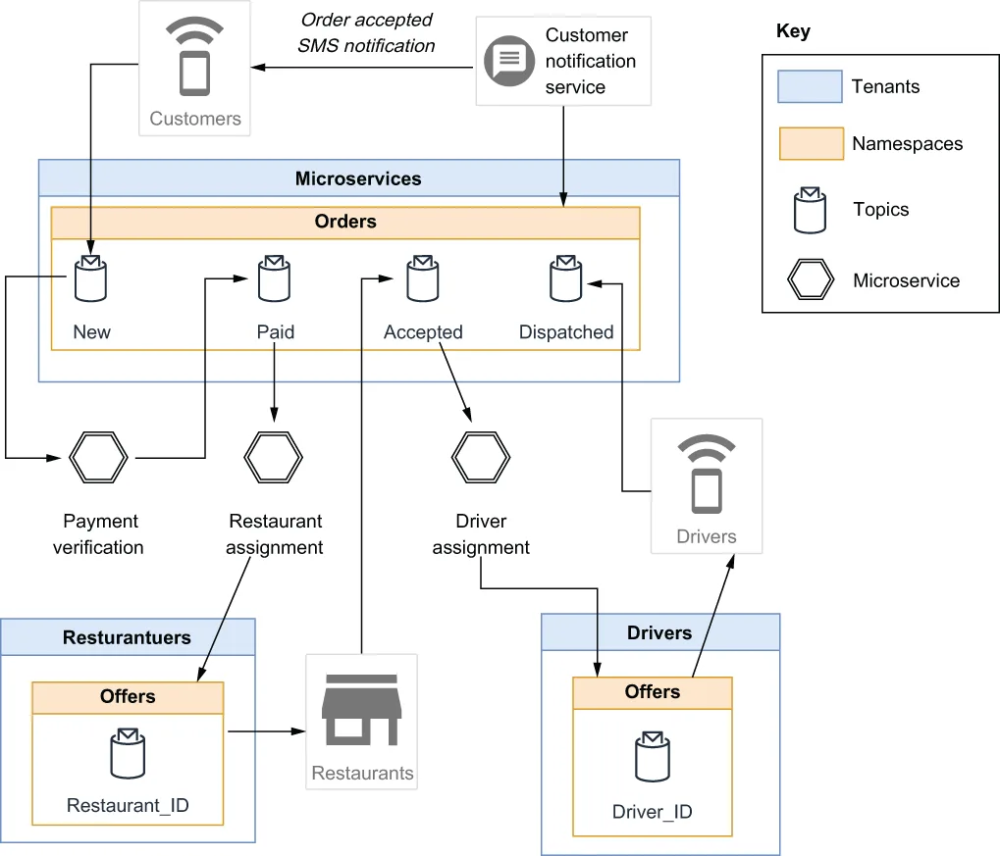
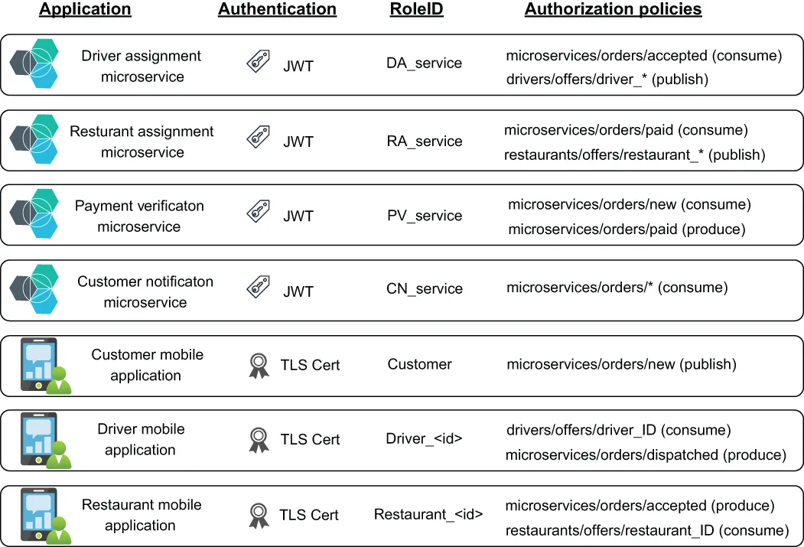

Let’s imagine you are working for a food delivery company named GottaEat that allows customers to order food from a variety of participating restaurants and have it delivered directly to you. Rather than employ their own fleet of drivers, your company has decided to enlist private individuals to deliver the food to keep costs down. The company will use three separate mobile applications to conduct business: a publicly available one for customers, a restricted one for all participating restaurateurs, and a restricted one for all authorized delivery drivers.
假设你在一家名为 GottaEat 的外卖公司工作，这家公司让客户能从多家入驻餐厅点餐，并把餐食直接送到客户手上。为了压低成本，公司不打算自建司机车队，而是决定招募个人来送餐。公司将使用三个相互独立的移动应用来开展业务：一个面向客户公开提供，一个仅限所有入驻餐厅使用，还有一个仅限所有已授权的送餐司机使用。
Order placement use case
下单用例
Next, let’s walk through a very basic use case for your company, the placement of an order by a customer, all the way through to when it is assigned to a driver for delivery using a microservices-based application that uses Apache Pulsar for communicating via messages. We will focus on how you might structure your namespaces under the restaurateurs and driver tenants, along with what permissions you would want to grant. The microservices tenant will be used by multiple tenants, so it is created and managed by the application team. Figure 6.4 shows the overall message flow in the order entry use case.
接下来，我们走一遍贵公司一个非常基础的用例：客户下单，一直到订单被指派给某位司机进行配送——整个流程由一个基于微服务的应用完成，该应用使用 Apache Pulsar 进行消息通信。我们将重点关注：在 restaurateurs 和 driver 这两个租户之下，你会如何组织命名空间，以及你会希望授予哪些权限。microservices 租户会被多个租户共用，因此它由应用团队创建和管理。图 6.4 展示了下单用例中的整体消息流。

Figure 6.4 Message flow during the order placement use case
图 6.4 下单用例期间的消息流
In this use case, a customer uses the company’s mobile application to select some food items, enter the desired delivery address, provide their payment information, and submit the request. The order information is published to the persistent:// microservices/orders/new topic by the mobile application.
在这个用例中，客户使用公司的移动应用挑选一些餐品、输入期望的配送地址、提供支付信息，然后提交请求。移动应用会把订单信息发布到 persistent://microservices/orders/new 主题。
The payment verification microservice consumes the inbound order and communicates with the credit card payment system to secure payment for the items before placing the order in the persistent://microservices/orders/paid topic to indicate that payment has been captured for the items. The service also replaces the raw credit card information with an internal tracking ID that be used at a later time to access the payment.
支付校验微服务会消费这条进来的订单，并与信用卡支付系统通信以完成扣款，然后把订单放入 persistent://microservices/orders/paid 主题，用以表明这些餐品的款项已经扣取成功。该服务还会把原始信用卡信息替换成一个内部追踪 ID，日后可凭借这个 ID 去访问该笔支付记录。
The restaurant assignment microservice is responsible for finding a restaurant that can fulfill the order by consuming from the persistent://microservices/ orders/paid topic and determining a subset of candidate restaurants based on the food items and delivery location. It then sends out an offer to each of these restaurants by publishing the order details to a specific restaurant’s topic that only they can access (e.g., persistent://restaurateurs/offers/restaurant_4827) to ensure the order is only fulfilled by one restaurant. If the offer is rejected, or after a certain amount of time elapses, the offer is rescinded and sent to the next restaurant in the list until it is fulfilled. Once a restaurant accepts the order via their mobile application, a message contain-ing the restaurant details, including location, is published to the persistent://microservices/orders/accepted topic.
餐厅指派微服务负责找出一家能够履约的餐厅：它消费 persistent://microservices/orders/paid 主题，并根据餐品和配送位置筛选出一批候选餐厅。随后，它通过把订单详情发布到只有某家特定餐厅自己才能访问的主题（例如 persistent://restaurateurs/offers/restaurant_4827），向这些餐厅逐一发出接单邀约，以确保该订单最终只由一家餐厅履约。如果邀约被拒绝，或者超过一定时限仍未应答，该邀约就会被撤回并发送给列表中的下一家餐厅，直到订单被接下为止。一旦某家餐厅通过自己的移动应用接受了订单，一条包含餐厅详细信息（含位置）的消息就会被发布到 persistent://microservices/orders/accepted 主题。
Once the order has been accepted, the driver assignment microservice will consume the message from the accepted topic and will attempt to locate a driver who can deliver the order to the customer. It selects a list of potential drivers based on their location, planned routes, etc., and publishes a message to a topic that only the driver can access (e.g., persistent://drivers/offers/driver_5063) to ensure the order is only dispatched to a single driver. If the offer is rejected, or after a certain amount of time elapses, the offer is rescinded and sent to the next driver in the list until it is accepted. If a driver accepts the delivery, a message containing the driver details is published to the persistent://microservices/orders/dispatched topic to indicate that the order is scheduled for delivery.
订单被接受之后，司机指派微服务会消费来自 accepted 主题的这条消息，并尝试找到一位能够把订单送到客户手上的司机。它会根据司机的位置、既定路线等因素筛出一份潜在司机名单，然后把消息发布到一个只有该司机本人能访问的主题（例如 persistent://drivers/offers/driver_5063），以确保订单只被派送给单一一位司机。如果邀约被拒绝，或者超过一定时限仍未应答，该邀约就会被撤回并发送给列表中的下一位司机，直到有人接单为止。如果有司机接受了这单配送，一条包含司机详情的消息就会被发布到 persistent://microservices/orders/dispatched 主题，用以表明该订单已排定配送。
All of the messages stored inside the topics of the persistent://microservices/ orders namespace contain both a customer_id and order_id data element. A customer notification service is subscribed to all of the topics shown, and when it receives a new record in any of these topics, it parses out those fields and uses the information to send out a notification to the corresponding customer’s mobile app, so they can track the progress of their order.
存储在 persistent://microservices/orders 命名空间下各主题中的所有消息，都同时包含 customer_id 和 order_id 这两个数据元素。有一个客户通知服务订阅了上面所示的全部主题，当它在其中任一主题收到新记录时，就会解析出这两个字段，并利用这些信息向对应客户的移动应用发出通知，让客户能够跟踪订单进度。
Tenant creation
创建租户
As the Pulsar superuser your first task would be to create all three of the tenants and their associated tenant admin roles. So, let’s review the steps required to create the necessary tenants for this use case, as shown in the following listing.
作为 Pulsar 超级用户，你的第一项任务是创建全部三个租户以及各自关联的租户管理员角色。那么，我们来看看为本用例创建所需租户的步骤，如下面清单所示。
Listing 6.22 Creating the Pulsar tenants
$PULSAR_HOME/bin/pulsar-admin tenants create microservices \
--admin-roles microservices-admin-role
$PULSAR_HOME/bin/pulsar-admin tenants create drivers \
--admin-roles drivers-admin-role
$PULSAR_HOME/bin/pulsar-admin tenants create restaurateurs \
--admin-roles restaurateurs-admin-role
Since we are delegating the administration of these tenants to someone else within our organization, I will take a moment to outline the characteristics of the individuals who should serve in this capacity on a tenant-by-tenant basis:
由于我们要把这些租户的管理工作委派给组织内的其他人，我在此花一点时间，逐个租户地勾勒一下适合担此职责的人选所应具备的特征：
Since the microservices tenant is used to share information across multiple services and applications, a good candidate for the corresponding tenant admin should be an IT professional responsible for architectural decisions across departments, such as an enterprise architect.
由于 microservices 租户被用来在多个服务与应用之间共享信息，对应租户管理员的合适人选应当是一位负责跨部门架构决策的 IT 专业人士，例如企业架构师。
For the restaurateurs’ tenant, a good candidate would be the person(s) in charge of the acquisition of new restaurateurs, as they will be the ones responsible for soliciting, vetting, and managing these partners. They can include the creation of restaurateurs’ private topics as part of the onboarding process, etc.
对于 restaurateurs 租户，合适人选是负责拓展新餐厅入驻的那位（或那几位）同事，因为正是他们负责招募、审核和管理这些合作方。他们可以把为餐厅创建私有主题作为入驻流程的一部分，等等。
Similarly, a good candidate for administering the driver’s topic would be the person(s) in charge of the acquisition of new drivers.
类似地，管理 driver 主题的合适人选，则是负责招募新司机的那位（或那几位）同事。
Authorization policies
授权策略
Based on the requirements for this use case, we would devise an overall security design similar to the one shown in figure 6.5, which defines the following security requirements:
基于本用例的需求，我们会设计出一套类似于图 6.5 所示的整体安全方案，它定义了以下几项安全要求：
The application that requires access
需要获取访问权限的应用程序
The authentication method it will use
它将使用的认证方式
The topics and namespaces it will access, and how
它将访问哪些主题和命名空间，以及以何种方式访问
The roleID we will assign to these permissions
我们将为这些权限分配的 roleID

Figure 6.5 Application-level security requirements for the order placement use case
图 6.5 下单用例中的应用级安全要求
For example, we know that the driver assignment microservice will use a JWT to authenticate with Pulsar and be assigned the DA_service role token, which will grant consume permission on the persistent://microservices/orders/accepted topic and produce permission on all the topics in the persistent://drivers/offers namespace. Therefore, the commands shown in listing 6.23 would need to be executed to enable the security policies for the DA_service role, and similar commands would be required for the other services as well. It is worth mentioning that, even though there may be multiple instances of the driver assignment service running, they can all use the same RoleID. This is not the case for some of the mobile applications, since we will need to know exactly which user is accessing the system to enforce our security policies.
举例来说，我们知道司机指派微服务会使用一张 JWT 向 Pulsar 认证，并被赋予 DA_service 角色令牌；该令牌将授予它对 persistent://microservices/orders/accepted 主题的消费权限，以及对 persistent://drivers/offers 命名空间下所有主题的生产权限。因此，需要执行清单 6.23 中所示的命令来为 DA_service 角色启用这些安全策略，其他服务也同样需要类似的命令。值得一提的是，即便可能同时运行着多个司机指派服务的实例，它们也都可以共用同一个 RoleID。但对于某些移动应用来说情况就不是这样了——因为我们需要确切知道到底是哪个用户在访问系统，才能执行我们的安全策略。
Listing 6.23 Enabling security for the driver assignment microservice
$PULSAR_HOME/bin/pulsar-admin namespaces create microservice/orders ❶
$PULSAR_HOME/bin/pulsar tokens create \ ❷
--private-key file:///path/to/private-secret.key \
--subject DA_service > DA_service-token.txt ❸
$PULSAR_HOME/bin/pulsar-admin namespaces grant-permission \
drivers/offers --actions produce --role DA_service ❹
$PULSAR_HOME/bin/pulsar-admin topics grant-permission \
persistent://microservices/orders/accepted \
--actions produce \
--role DA_service ❺
❶ Create the microservices/order namespace; this only needs to be done once.
❶ 创建 microservices/orders 命名空间；这一步只需要做一次。
❷ Create a JWT for the DA_service role.
❷ 为 DA_service 角色创建一张 JWT。
❸ Save the token in a text file to share with the service deployment team.
❸ 把令牌保存到一个文本文件中，以便分享给服务部署团队。
❹ Grant the DA_service role permission to publish to any topic in the drivers/offers namespace.
❹ 授予 DA_service 角色向 drivers/offers 命名空间中任意主题发布消息的权限。
❺ Grant the DA_service role permission to consume from a single topic.
❺ 授予 DA_service 角色从单个主题消费消息的权限。
The JWT should be saved to a file and shared with the team that will be deploying the driver assignment service, so they can make it available to the service at runtime by either bundling it with the service or placing it in a secure location, such as a Kubernetes secret. The mobile applications, in contrast, will use custom client certificates that are generated after the driver or restaurateur has been successfully onboarded and issued a unique ID, as the client certificate that is generated will be associated with that specific ID in order to uniquely identify to the user when they connect (e.g., driver_4950 would be issued a client certificate associated with a common name of driver_4950 and would be granted a role token for that role). We can see this in the following listing, which shows the steps that would be taken by the driver-admin-role to add a new driver to the Pulsar cluster.
这张 JWT 应当保存成文件，并分享给将要部署司机指派服务的团队，让他们能在运行时把它提供给该服务——具体做法可以是把它随服务一起打包，也可以是把它放到一个安全的位置，例如 Kubernetes secret。相比之下，移动应用则使用定制的客户端证书：这些证书是在司机或餐厅成功完成入驻、并被分配了唯一 ID 之后生成的，因为所生成的客户端证书会与该特定 ID 关联，从而在用户连接时唯一地标识出他的身份（例如，driver_4950 会被签发一张 common name 为 driver_4950 的客户端证书，并被授予对应该角色的角色令牌）。我们在下面清单中可以看到这一点，它展示了 driver-admin-role 为 Pulsar 集群添加一位新司机所要执行的步骤。
Listing 6.24 Onboarding a new driver
openssl req -config file:///path/to/openssl.cnf \
-key file:///path/to/driver-4950.key.pem -new -sha256 \ ❶
-out file:///path/to/driver-4950.csr.pem \
-subj "/C=US/ST=CA/L=Palo Alto/O=gottaeat.com/CN=driver_4950" \ ❷
-passin pass:${CLIENT_PASSWORD}
openssl ca -config file:///path/to/openssl.cnf \
-extensions usr_cert \
-days 100 -notext -md sha256 -batch \
-in file:///path/to/driver-4950.csr.pem \ ❸
-out file:///path/to/driver-4950.cert.pem \ ❹
-passin pass:${CA_PASSWORD}
$PULSAR_HOME/bin/pulsar-admin topics grant-permission \
persistent://drivers/offers/driver_4950 \ ❺
--actions consume \
--role driver_4950 ❻
$PULSAR_HOME/bin/pulsar-admin topics grant-permission \
persistent://microservices/orders/dispatched \
--actions produce \
--role driver_4950
❶ Use the driver-provided private key to generate a certificate request.
❶ 使用司机提供的私钥生成证书申请。
❷ Use the CN field to specify the new roleID for this driver.
❷ 使用 CN 字段为这位司机指定新的 roleID。
❸ Use the CSR to generate a TLS client certificate for the new driver.
❸ 使用该 CSR 为新司机制作一张 TLS 客户端证书。
❹ The name of the client certificate file, which will be bundled with the mobile app download
❹ 客户端证书文件的名称，该文件将随移动应用下载一起打包分发。
❺ Grant the driver_4950 role permission to consume from a dedicated topic.
❺ 授予 driver_4950 角色从专用主题消费消息的权限。
❻ Grant the driver role permission to produce to the general dispatched topic.
❻ 授予该司机角色向通用的 dispatched 主题生产消息的权限。
In listing 6.24, we see that a TLS client certificate is generated specifically for the new driver, based on their ID. This certificate is then bundled together with the driver mobile application code to ensure it is always used to authenticate with Pulsar when connecting to the cluster. The driver will then be sent a link they can use to download and install it on their smartphone.
在清单 6.24 中我们看到，系统会根据新司机的 ID 专门为他生成一张 TLS 客户端证书。随后这张证书会与司机端移动应用代码打包在一起，以确保它在连接集群时始终被用于向 Pulsar 认证。之后，系统会向该司机发送一个链接，供他下载并把它安装到自己的智能手机上。